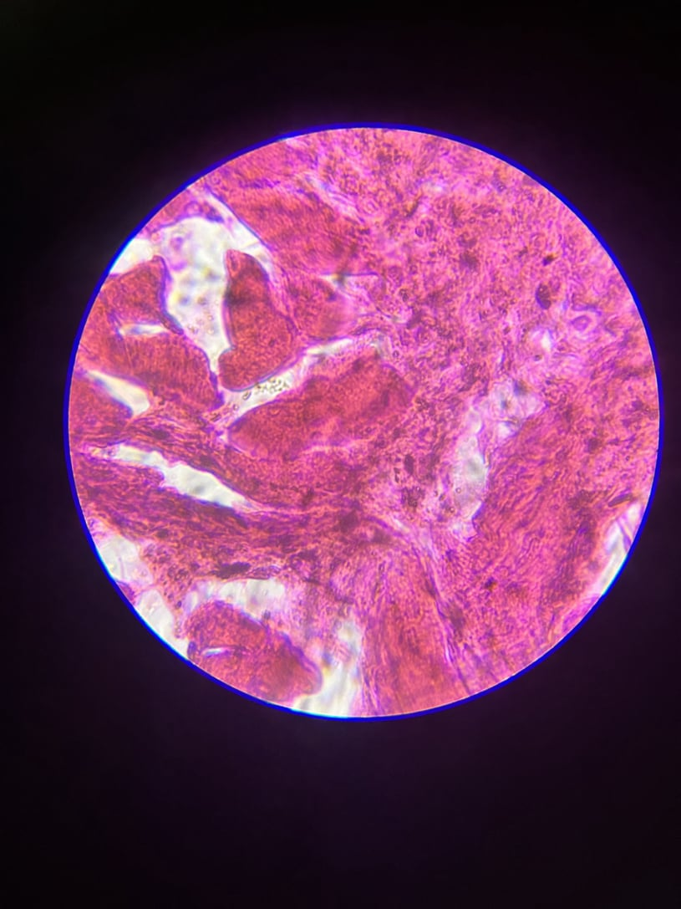
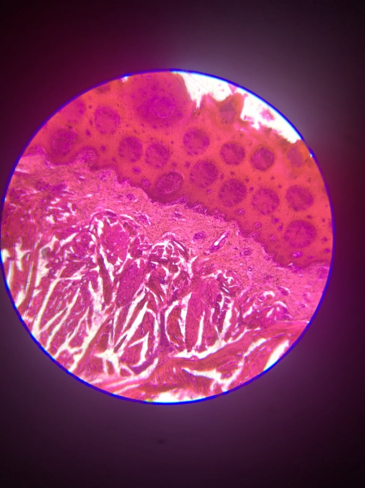
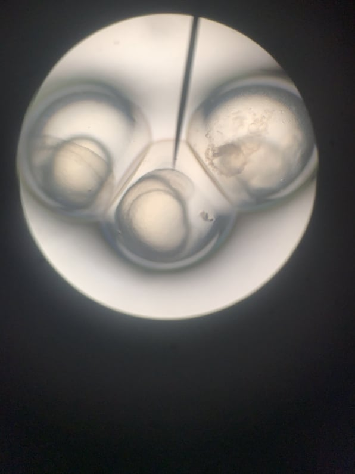
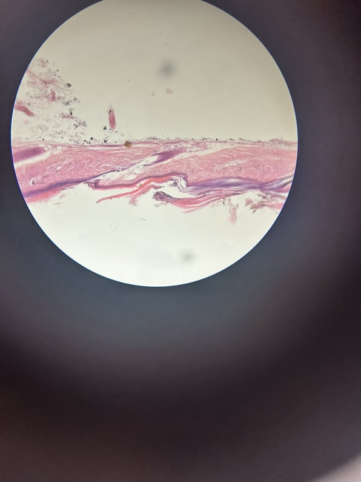
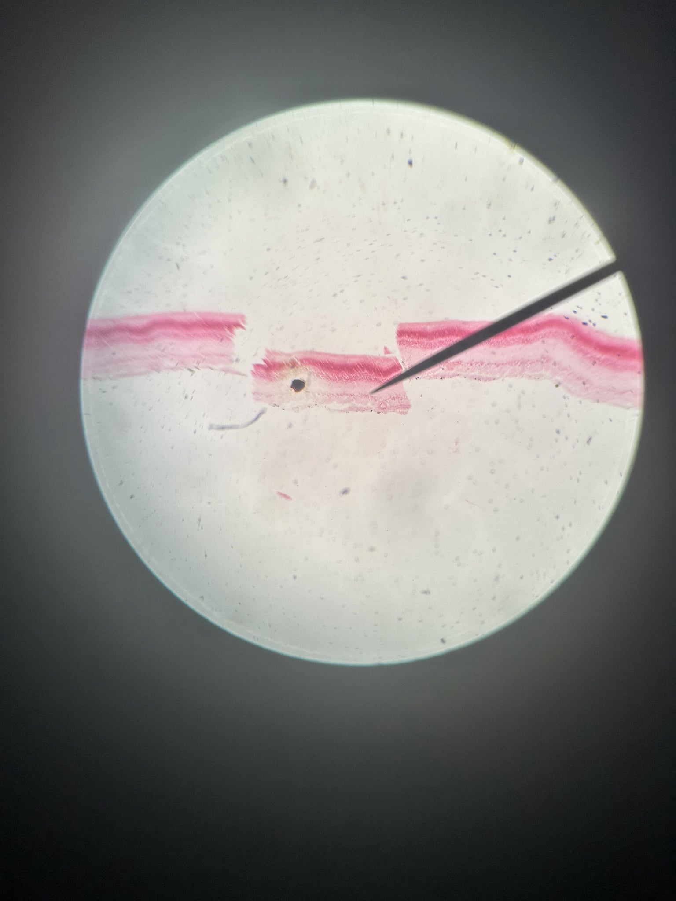

Microcospe views of tissues

Human brain

Human tongue

Human muscle

Fish egg

Human egg

Exploring the potential of synthetic biology and Genetically Modified Organisms (GMOs)
The process begins with encoding the digital information into a biological format. Each piece of information, typically represented in binary code, would be translated into specific DNA sequences or modifications. This encoding process involves assigning combinations of nucleotides—adenine (A), thymine (T), cytosine (C), and guanine (G)—to represent the binary code. Essentially, the genetic code of the plant's DNA becomes the medium for storing the digital information. The next step involves the design of synthetic DNA sequences. These sequences are meticulously crafted to correspond to the encoded digital data. The synthetic DNA essentially serves as the carrier of the information that will be introduced into the plant's genome. The precision of these sequences is vital, as any errors or inaccuracies in the synthetic DNA could compromise the fidelity of the stored data.
To introduce the synthetic DNA into the plant cells, Agrobacterium-mediated transformation can be employed. In this method, Agrobacterium tumefaciens, a bacterium commonly used in plant genetic engineering, is modified to carry the synthetic DNA sequences. The modified Agrobacterium is then introduced to the plant cells. Agrobacterium naturally transfers a portion of its DNA, known as the transfer DNA (T-DNA), into the plant cell. The T-DNA contains the synthetic DNA sequences, and the plant cell's machinery incorporates this foreign DNA into its genome during the repair process.
In the described experiment, the combined use of CRISPR-Cas9 and Agrobacterium-mediated transformation can enhance the accuracy and efficiency of introducing synthetic DNA into the tobacco plant genome. While Agrobacterium-mediated transformation can introduce synthetic DNA into plant cells, CRISPR-Cas9 allows for targeted editing at specific genomic locations, ensuring that the synthetic DNA is incorporated at predetermined sites with a higher level of accuracy.
Guide RNAs (gRNAs), which are short RNA molecules, are designed with bioinformatics tools to target specific locations in the tobacco plant genome where the encoded information will be inserted. These gRNAs act as guides for the Cas9 enzyme, directing it to the precise genomic locations for modification. The CRISPR-Cas9 system is then employed to induce breaks at these predefined locations, creating openings in the plant's DNA.
During the repair process that follows the CRISPR-induced breaks, the synthetic DNA sequences are provided as templates. In molecular biology, a template is a strand of nucleic acid that is used to guide the synthesis of a complementary strand. In this context, the synthetic DNA serves as a template for repair, acting as a guide for the cellular repair machinery within the plant cells. The cell's natural repair mechanisms recognize the breaks in the DNA and use the synthetic DNA as a blueprint to fill in the gaps, effectively incorporating the synthetic DNA into the plant's genome. As a result, the introduced synthetic DNA becomes an integral part of the plant's genetic material.
The inherent reproductive mechanisms of the tobacco plant offer a fascinating prospect for the propagation of digital data. As the plant undergoes natural reproduction through processes such as flowering and seed formation, the encoded synthetic DNA sequences could be inherited by successive generations, essentially creating copies of the encoded information as the plant reproduces itself. This opens up the possibility of a self-sustaining system where the digital data persists and propagates across generations of tobacco plants, providing a unique avenue for sustainable and biological data archiving.
To retrieve and interpret the stored digital data, the process begins with the extraction of genomic DNA from the modified tobacco plant. This involves harvesting tissues that contain the modified genetic material. Through established molecular biology techniques, genomic DNA is isolated for further analysis.
Polymerase Chain Reaction (PCR) is then employed to selectively amplify the genomic segment of interest within the plant's genome. This targeted amplification is focused on the genomic segment that contains the synthetic DNA sequences, which carry the encoded digital information.
The amplified DNA is subjected to sequencing techniques, such as next-generation sequencing (NGS). This step reveals the precise nucleotide sequence of the modified region. Bioinformatics tools are then applied to interpret the sequenced data, effectively decoding the stored digital information back into its original form. The decoded data can be compared with the initially encoded information to assess the accuracy and fidelity of the entire process.
The concept of encoding digital data in living organisms, particularly in plants through genetic engineering, presents a promising avenue for sustainable data storage. This innovation offers a distinct alternative to traditional data storage methods, especially data centers that consume substantial amounts of energy and contribute to electronic waste. We know that the data industry generates about 4% of global CO2 emissions today. Furthermore, as plants undergo natural processes of growth and regeneration, the encoded information can be propagated in a self-sustaining manner, providing an innovative and environmentally conscious solution to the challenges posed by traditional data storage methods. .
The ethical dimensions of encoding digital data in plants are multifaceted. Fundamental considerations include informed consent and autonomy, especially given the inability of plants to provide explicit consent. Environmental impact and potential ecological disruptions, unintended consequences of genetic modifications, and long-term effects on plants must be thoroughly assessed and minimized. Questions of ownership, intellectual property, and equitable access to this innovation's benefits need careful attention, as does the establishment of robust regulatory oversight. Ethical responsibility demands a delicate balance between scientific innovation and considerations of environmental, social, and cultural impacts.
2017, Karin Fister, Iztok Fister Jr., and Jana Murovec
This seminar opened my eyes to the substantial potential of synthetic biology in design. The intersection of both disciplines opens doors to a new era where the boundaries between the natural and the engineered blur. They allow the modification of living organisms to exhibit desired behaviours or produce valuable components, offering solutions to some of humanity's most pressing challenges.
However, as I delve into the potential of synthetic biology, ethical considerations become paramount. The power to design and manipulate life raises profound questions about the responsible use of such technology. Striking a balance between innovation and ethical considerations is crucial to ensure that synthetic biology contributes positively to society without unintended consequences.
This seminar also made me realise that the future is now, just not everywhere. Many researchers and experiments have already brought what most people consider futuristic scenarios to reality in controlled environments, but these lack funding or momentum to become part of the norm. Solutions to address global warming already exist today, but these would require radical changes to our ways of living, while "climate fatigue" is spreading globally. Green parties are expected to lose more than a third of their seats in 2024's EU elections to favour right-wing climate-sceptic conservatives.
I also got acquainted with the concept of bio-hacking, using everyday materials and components to explore biological processes. Who would have thought that one could create colonies of micro-organisms in their kitchen! We used petri dishes to cultivate multipurpose bacteria, based on agar (gelatine, carbohydrate) bovril (aminoacids), sugar (for osmosis regulation), water and microbes added from different sources (hair, spit, breath etc.).

Landing Page Builder